<!--
  Component: pet-head
  Source:    custom (concept inspired by adrienlamy.fr's grabbable head; code written from scratch)
  Notes:     Your dog drawing as a toy. Hover: it tilts toward the cursor in 3D and swells a little.
             Grab and drag: it squashes and stretches toward the pointer like rubber; let go and it
             wobbles back on a spring. The root's data-mood is "idle", "hover" or "grab", so face
             layers can change expression.
             Now: one placeholder image (the whole dog moves). Later, add layered parts on the same
             canvas size, and only the head moves while the body stays put:
                 <div data-layer="head"> … </div>
               inside the head: data-layer="ear-left" / "ear-right" (flop with a lag) and
               data-face="idle|hover|grab" images (only the matching one shows).
             Without interactions.js it is a still image. Class c-pet--still: no grab cursor
             (used when the drawing has to stay put, e.g. lined up with a painting).
  Hooks:     id="c-pet-head" (CustomPetHead), .c-pet__rig, [data-layer], [data-face].
  Tokens:    color.bg/text, layout.pet-width, motion (spring settings live in the JS module)
-->
<style>
  .c-pet {
    --color-bg: #000000;
    --color-text: #f2ead3;
    --layout-pet-width: min(520px, 80vw);
    --space-4: 1rem;

    display: grid;
    justify-items: center;
    gap: var(--space-4);
    margin: 0;
    padding: var(--space-4) 0;
    background: var(--color-bg);
    color: var(--color-text);
  }

  .c-pet__stage {
    width: var(--layout-pet-width);
    perspective: 900px;
    touch-action: pan-y;
    user-select: none;
    -webkit-user-select: none;
  }

  .c-pet__rig {
    position: relative;
    display: block;
    cursor: grab;
    transform-origin: 50% 60%;
    will-change: transform;
  }

  .c-pet--still .c-pet__rig { cursor: auto; will-change: auto; }

  .c-pet[data-mood="grab"] .c-pet__rig {
    cursor: grabbing;
  }

  .c-pet__img,
  .c-pet [data-layer] img {
    display: block;
    width: 100%;
    height: auto;
    pointer-events: none;
    -webkit-user-drag: none;
  }

  .c-pet [data-layer]:not(:first-child) {
    position: absolute;
    inset: 0;
  }

  /* Expression layers: only the face matching data-mood shows. */
  .c-pet [data-face] { display: none; }
  .c-pet[data-mood="idle"] [data-face="idle"],
  .c-pet[data-mood="hover"] [data-face="hover"],
  .c-pet[data-mood="grab"] [data-face="grab"] { display: block; }

  .c-pet__caption {
    margin: 0;
    font: 12px/1.4 ui-monospace, monospace;
    letter-spacing: 0.08em;
    text-transform: uppercase;
    opacity: 0.6;
  }
</style>

<figure class="c-pet" id="c-pet-head" data-source="custom" data-mood="idle">
  <div class="c-pet__stage">
    <div class="c-pet__rig">
      
    </div>
  </div>
  <figcaption class="c-pet__caption">Placeholder caption: grab me</figcaption>
</figure>
